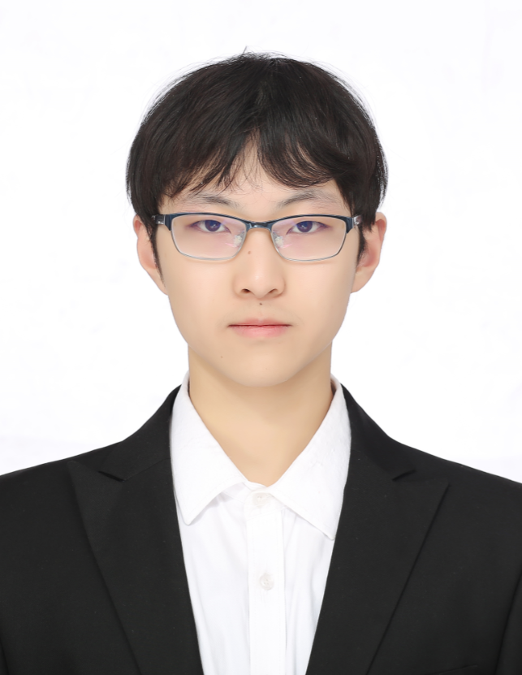
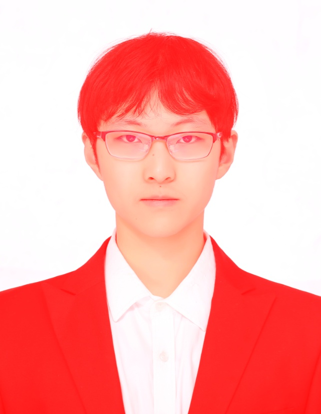
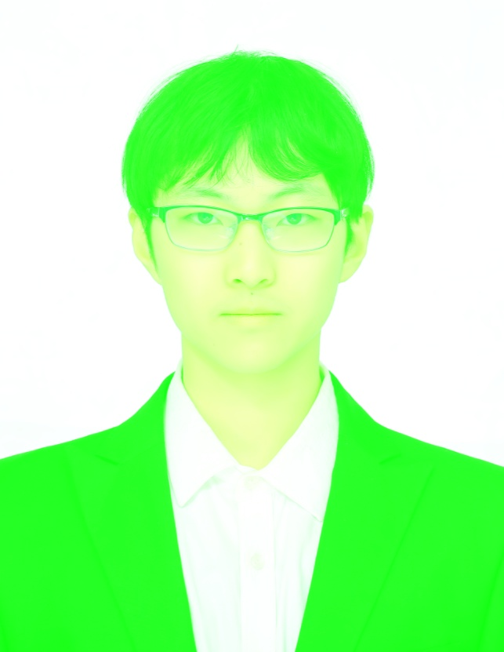
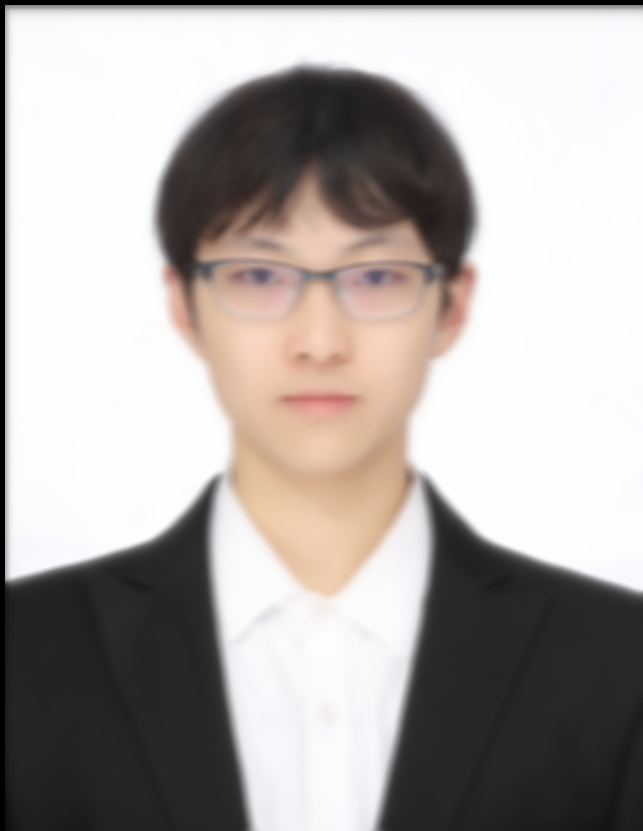
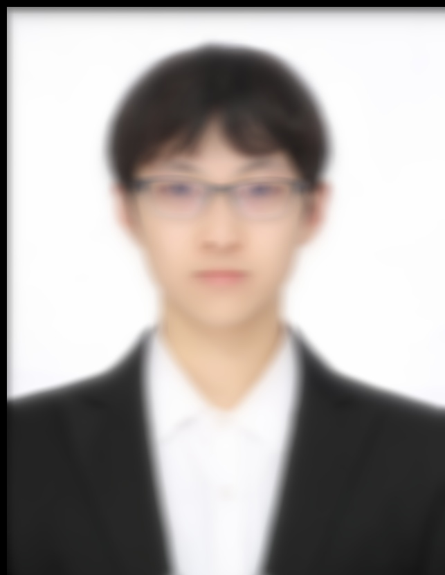
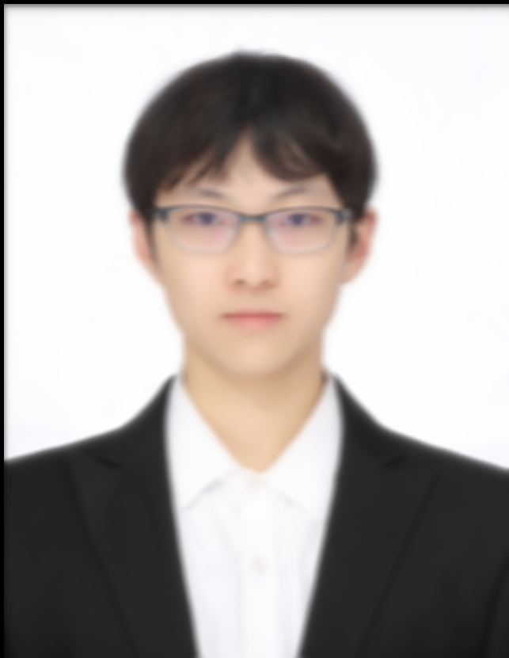
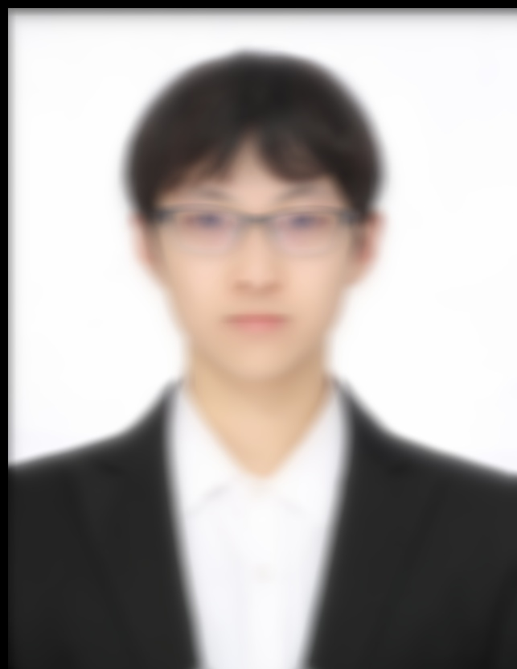

CS585-Assignment 1 Report
Here is the origin image of my face.

In first question, I tried to tint the image by different color. The method I used is to change the value of three channels to 255 respectively.
Here are results:

In second question, I blurred the image. The method I used is assigning to each pixel the average grayscale pixel value of itself and its neighbors.
The radius of this function refers to the range of selected neighbors.
Following are results when radius = 1, 5, 10:
 
